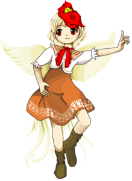

- Welcome to Touhou Wiki!
- Please register to edit. For assistance, check in with our Discord server or IRC channel.
Kutaka Niwatari

|
Attention: This article is a stub and it needs expanding with more information related to the article's topic. If you can add to it in any way, please do so. |
Kutaka Niwatari | |
|---|---|
|
 Kutaka Niwatari in Wily Beast and Weakest Creature Clerical God of Hell's CheckpointMore Character Titles | |
| Species |
God of chickens |
| Abilities |
Healing throat illnesses |
| Occupation |
Gatekeeper of Hell |
| Location | |
Music Themes | |
| |
Appearances | |
| Official Games | |
| |
Kutaka Niwatari (庭渡 久侘歌 Niwatari Kutaka) is the god of chickens and a guard of Hell. She lives in a spring atop the Youkai Mountain but goes to Higan for her job of overseeing the gateway to otherworlds such as Hell under the yama's oversight.
General Information[edit]
Kutaka first appeared as the stage 3 midboss and boss in Wily Beast and Weakest Creature.
Abilities[edit]
Healing throat illnesses
Background Information[edit]
Origin[edit]
Name[edit]
Design[edit]
Kutaka wears a brown dress under a short white jacket. Her jacket has an orange Puritan collar, which she wears a red ribbon over. She wears long brown boots. She has fluffy yellow wings and a bushy, feathery tail. She has red eyes and a light tan. Her hair is cut short and light yellow in color. Her head is partially covered in red feathers which are apparently hosting a tiny chick.
Story[edit]
Games[edit]
- Wily Beast and Weakest Creature
Kutaka approaches the protagonist as she enters the gateway to Hell, claiming that she has heard of her from the Yama. Although given permission to let the outsider in, she defends the gate anyway and loses.
Spell Cards[edit]
| Name | Translated | Comments | Games | Stage | ||
|---|---|---|---|---|---|---|
| Total: 9 | ||||||
| 水符「水配りの試練」 | Water Sign "Ordeal of Water Distribution" | [[Kutaka Niwatari/Spell Cards/#Spell Card 21|]] | St. 3: E/N | |||
| 水符「水配りの上級試煉」 | Water Sign "High-Level Purgatordeal of Water Distribution" | [[Kutaka Niwatari/Spell Cards/#Spell Card 23|]] | St. 3: H | |||
| 水符「水配りの極級試煉」 | Water Sign "Ultimate Purgatordeal of Water Distribution" | [[Kutaka Niwatari/Spell Cards/#Spell Card 24|]] | St. 3: L | |||
| 光符「見渡しの試練」 | Light Sign "Ordeal of Surveying" | [[Kutaka Niwatari/Spell Cards/#Spell Card 25|]] | St. 3: E/N | |||
| 光符「見渡しの上級試煉」 | Light Sign "High-Level Purgatordeal of Surveying" | [[Kutaka Niwatari/Spell Cards/#Spell Card 27|]] | St. 3: H | |||
| 光符「見渡しの極級試煉」 | Light Sign "Ultimate Purgatordeal of Surveying" | [[Kutaka Niwatari/Spell Cards/#Spell Card 28|]] | St. 3: L | |||
| 鬼符「鬼渡の試練」 | Oni Sign "Ordeal of Oniwatari" | [[Kutaka Niwatari/Spell Cards/#Spell Card 29|]] | St. 3: E/N | |||
| 鬼符「鬼渡の上級試煉」 | Oni Sign "High-Level Purgatordeal of Oniwatari" | [[Kutaka Niwatari/Spell Cards/#Spell Card 31|]] | St. 3: H | |||
| 鬼符「鬼渡の獄級試煉」 | Oni Sign "Hell-Level Purgatordeal of Oniwatari" | [[Kutaka Niwatari/Spell Cards/#Spell Card 32|]] | St. 3: L | |||
Additional Information[edit]
Fandom[edit]
Official Profiles[edit]
| ○３面ボス 地獄関所の番頭神 庭渡 久侘歌（にわたり くたか） 種族：神様 地獄、鬼の国などの、異界との関所の番人。 今回は地獄に行きたいという人間の話を閻魔様に話を聞いていたが、 彼岸には彼女の仕事場があるだけで、普段から彼岸に住んでいるわけではない。 彼女の正体は家畜化される前の、野生の鶏の神様、ニワタリ神である。 密かに、人間の食料と化してしまった鶏の、地位向上の為に何か出来ることは無いかと考えている。 |
Stage 3 Boss: Clerical God of Hell's Checkpoint Kutaka Niwatari Species: God The guard of the checkpoint leading to various Otherworlds, such as Hell and the land of oni. In her appearance here, the yama have informed her of a human who wanted to enter Hell, but she was worried about how the human would fare in Hell, so she decided to test their strength. Her place of work is at Higan, but she doesn't spend most of her time there. She seems to typically reside at the top of a waterfall on the Youkai Mountain, in a spot with a beautiful view. Her true identity is that of Niwatarijin, the god of wild chickens from before they were domesticated. People tend to think of chickens as being sort of weak and cowardly, but she's a polite and just god who values equality and altruism above all. She's quietly considering what she can do to help raise the status of chickens, who've been reduced to a food source for humans. |
Official Sources[edit]
- 2019/05/05 Wily Beast and Weakest Creature trial - omake.txt (trial profile, stage 3 dialogue)
References[edit]
| This page is part of Project Characters, a Touhou Wiki project that aims to write proper descriptions for all official characters of Touhou Project. Please keep the character page guidelines in mind when contributing. |